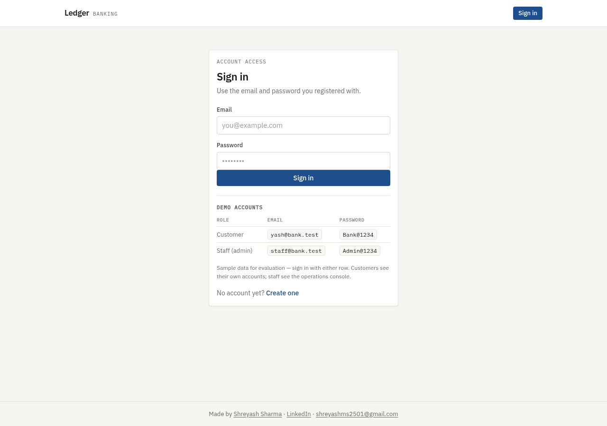
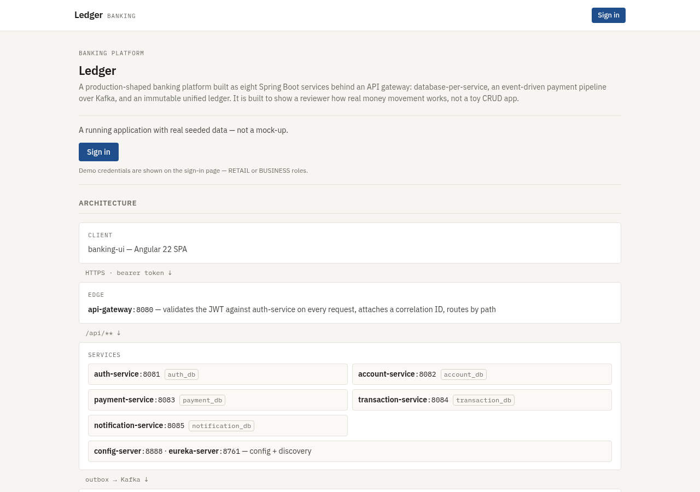
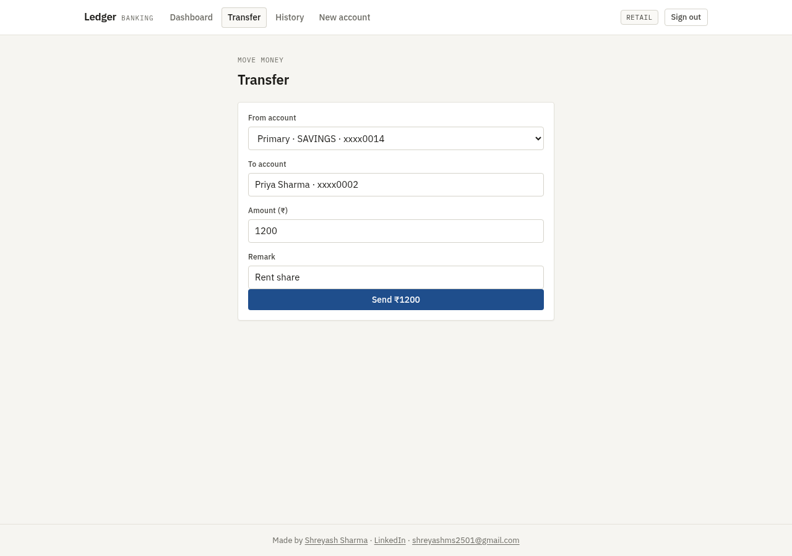
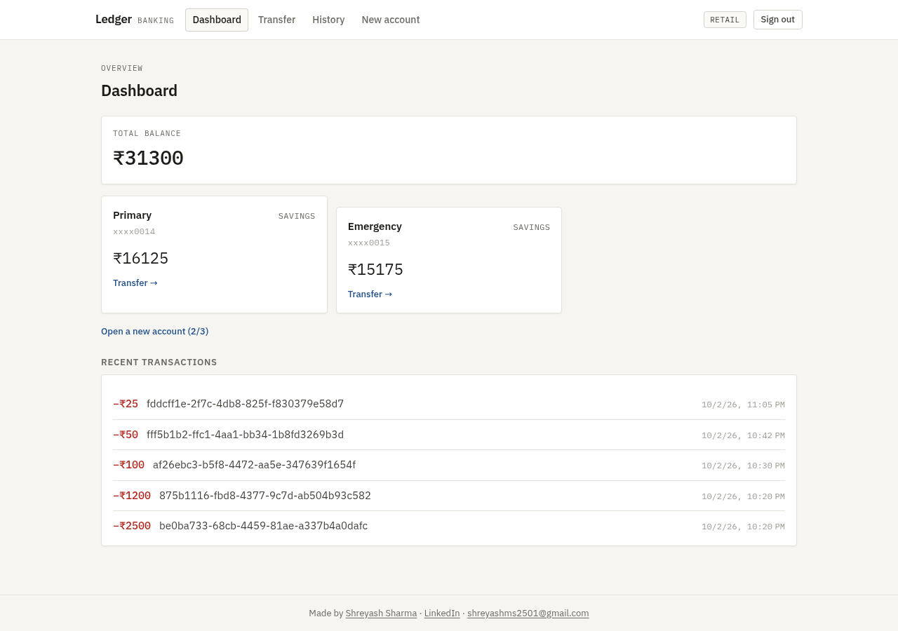
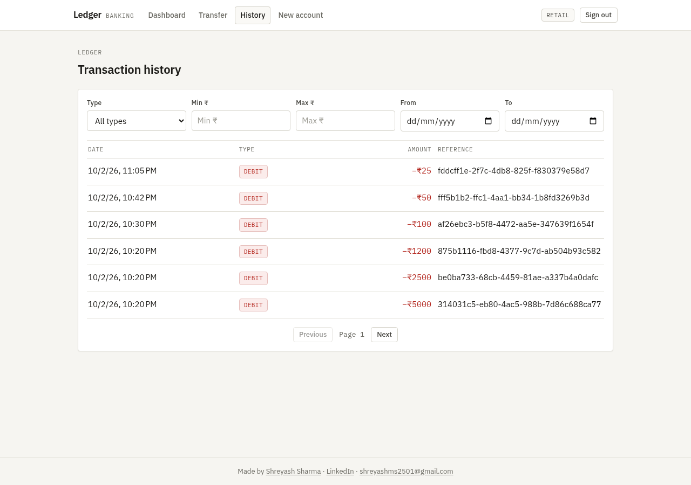
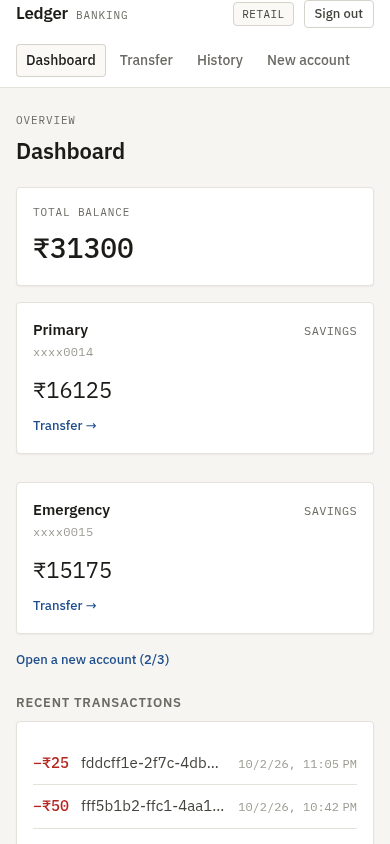

A retail and business banking platform: accounts, atomic money transfers, an
event-driven payment pipeline, an immutable unified ledger, and role-based access
across eight services behind an API gateway — fronted by an Angular client. Built
to answer a specific question: what does money movement actually look like when it
is not one UPDATE in one database?
In plain terms: A bank's core plumbing: money moves between accounts in one database transaction, so two transfers racing each other cannot overdraw an account, and every movement lands in a ledger that is never updated or deleted.
Running over a real database with seeded demo data, across five databases and eight services. A transfer
completes end to end — gateway, payment service, database transaction, outbox,
Kafka, ledger — and the ledger entry is visible in the client afterwards.
On a fixed address — self-hosted, so it is up whenever the machine is running. The sign-in page displays its own demo accounts, so nothing else has to be arranged.
The client posts a transfer with a bearer token and an idempotency key.
The gateway validates the token and forwards user id, role, correlation id and a shared gateway secret. The five business services reject a request that arrives without it; configuration and service discovery carry no such filter, so they sit outside that boundary rather than behind it.
Payment service opens one transaction and checks the idempotency key. A repeat of the same request returns the original payment id instead of moving money again, and a unique constraint on the column is the database-level backstop against a duplicate payment row.
Payment service calls account service to move the money.
Account service runs one ACID transaction: a conditional debit that only matches when the balance covers it, then the credit, then two audit rows — all in the same transaction. If the credit fails the whole thing rolls back.
Payment service writes the payment row plus three outbox rows in that same transaction. If the transaction commits, the events exist; if it does not, they do not. Money does not move without the ledger being told.
Two pollers pick up outbox rows FOR UPDATE — notifications every second, ledger batches every ten — mark them SENDING with a batch id, and publish to Kafka.
Transaction service checks the batch id first. A batch it has already processed is answered with a re-sent confirmation rather than applied twice. New entries are inserted with ON CONFLICT DO NOTHING.
The ledger confirms back over Kafka. COMMITTED marks the batch published; FAILED marks it for retry. A duplicate confirmation is ignored.
Key decisions
Database per service. Five PostgreSQL databases, no shared tables. Cross-service references are logical, enforced in application code — so no service can quietly join against another's data, and each can be migrated on its own.
Race-free overdraft protection. One ACID transaction per transfer with a conditional update on the balance. Two concurrent transfers cannot overdraw an account, and there is no application-level lock to get wrong. A saga was considered and deliberately deferred — the transfer is atomic in one database, so it is not needed yet.
Transactional outbox with a three-state machine. Ledger entries move PENDING → SENDING → PUBLISHED, with ERROR on a failed confirmation, retry after a count threshold, a reaper that resends notification rows left in SENDING, and clean-up of published rows. This is what makes "no ledger entry lost, none applied twice" hold under retry rather than
depend on timing.
Idempotency on retry. A repeat of the same request is answered from the key instead of moving money again; a batch id blocks a double ledger insert; a conflict clause makes row-level retries safe; duplicate confirmations are ignored. Each layer assumes the one above it may deliver twice.
An immutable ledger. Transaction service is append-only and is the single source of truth for history and reporting, fed by every service that moves money. There is no update and no delete path.
Tokens with a short life and a rotation. Access tokens last an hour; refresh tokens last seven days, are stored SHA-256 hashed, rotate on use, and are revoked on logout through a blacklist. Passwords are bcrypt hashed.
Roles checked twice. RETAIL, BUSINESS, EMPLOYEE, ADMIN and AUDITOR — enforced at the gateway and re-checked inside each service against the forwarded identity.
Correlation ids on every request. Generated at the gateway or by the client, propagated through logs, and printed in the log pattern — so one request can be followed across five services without a debugger.
Services and ports
Deployed ports; the repository's compose file uses different ones
Service
Port
Role
config-server
8888
Centralised configuration
eureka-server
8761
Service discovery
api-gateway
8086
Single entry point, token check, routing, correlation ids
auth-service
8092
Users and roles, token issue, refresh rotation, revocation
account-service
8082
Profiles, accounts, the atomic transfer, employees, audit log
Measured from the source and the running deployment
Metric
Value
Services
8
PostgreSQL databases
5
Tables declared across the five schemas
17
Kafka topics
3
Unit tests, all passing
76
Ledger partitions (17 monthly + DEFAULT)
18
Architecture decision records
9
Endpoints
39
There is no end-to-end test suite for this platform — the 76 tests are unit and
slice tests inside each service, and the recorded all-green run predates the current
commit, which has since changed a schema and the gateway configuration that these tests
do not cover. The service count, ports and partition count were checked against the
running deployment.
Screenshots
Captured from the live deployment. The transfer shown was executed end to end through the gateway, the payment service, Kafka and the ledger.

The client's own sign-in page, which lists its demo accounts. This platform does not use Keycloak.

Pre-login welcome screen — the topology is explained before anyone signs in.

The transfer form. Submitting it runs the full pipeline described above.

Accounts and the most recent ledger entries, read back from the ledger service.

Ledger history, filtered and paged.

The same client at 390px.
The client is also verified at phone width: an earlier version scrolled sideways
because a flex column was missing min-width: 0 — that story is
in the engineering notes.